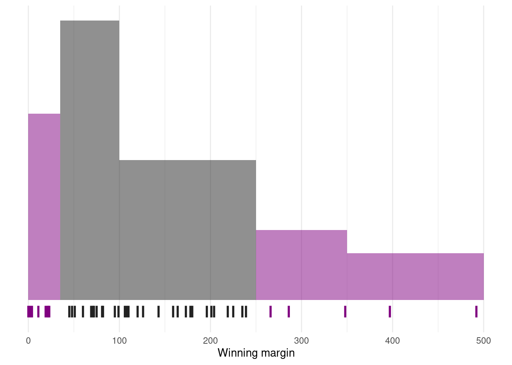
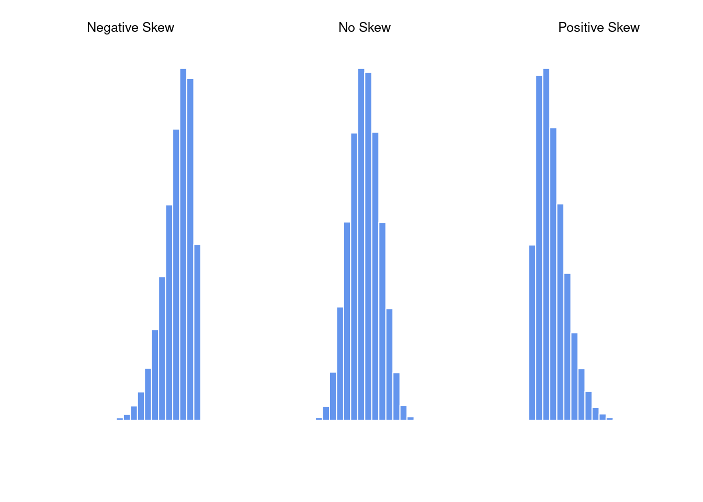
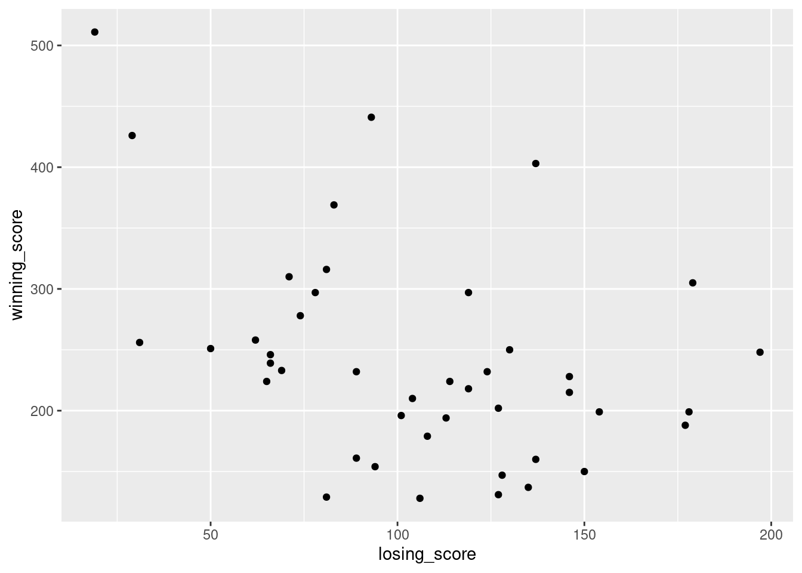
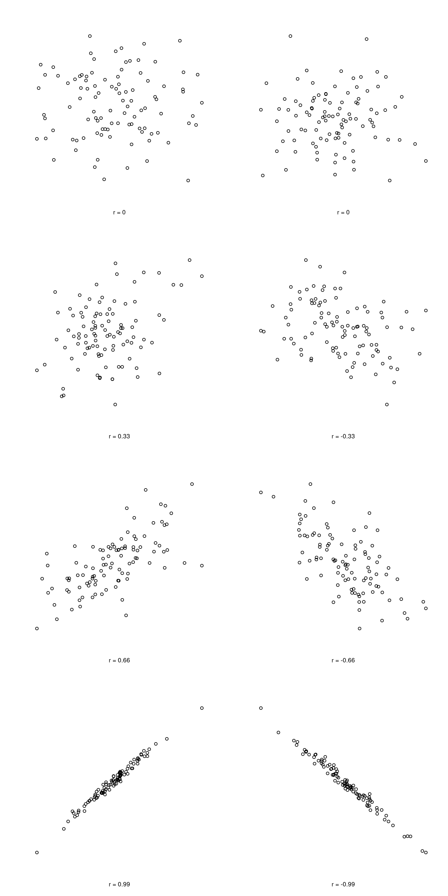
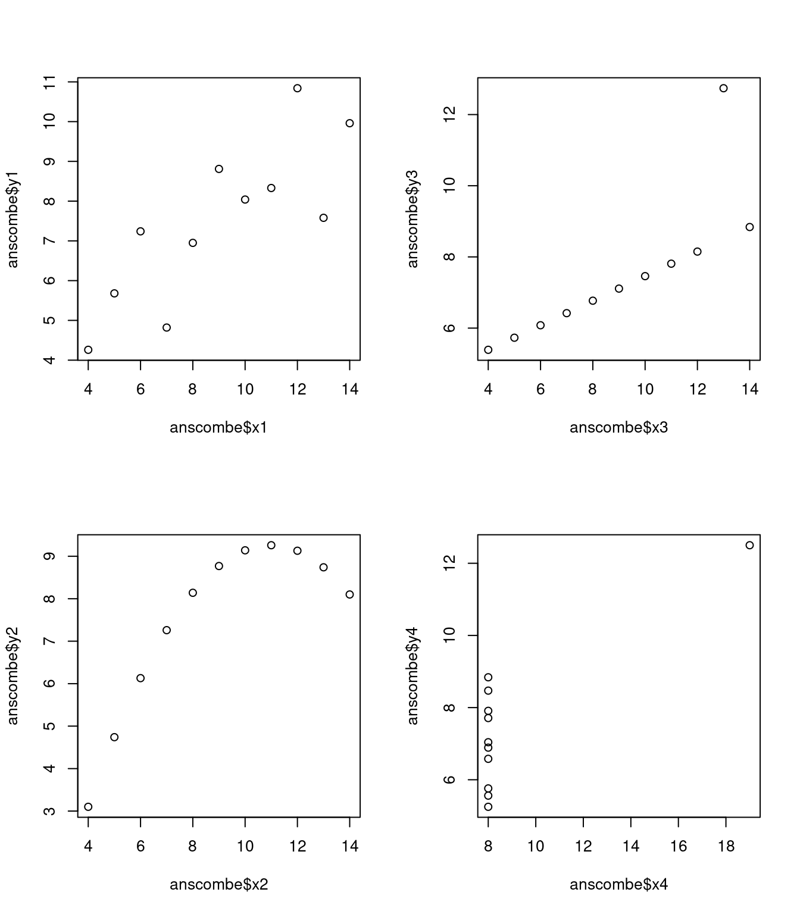

library(tibble)
library(lsrbook)11 Descriptive statistics
Important
You are, I’m sorry to inform you, reading the work-in-progress revision of “Learning Statistics with R”. This chapter is currently a mess, and I don’t recommend reading it.
Any time that you get a new data set to look at, one of the first tasks that you have to do is find ways of summarising the data in a compact, easily understood fashion. This is what descriptive statistics (as opposed to inferential statistics) is all about. In fact, to many people the term “statistics” is synonymous with descriptive statistics. It is this topic that we’ll consider in this chapter, but before going into any details, let’s take a moment to get a sense of why we need descriptive statistics. To get started, let’s take a look at the southern_slam data that is bundled as part of the lsrbook package. First, let’s load the packages that we’ll need:
The reason for loading the lsrbook package is probably obvious: that’s the package that provides the data set! The reason for loading tibble is probably less obvious, so I’d better explain: now that I’ve loaded the tibble package, the southern_slam data set will be interpreted as a tibble rather than a “vanilla” data frame. As a consequence, when I print the southern_slam data I get some slightly nicer looking output:
southern_slam# A tibble: 43 × 10
time home_team home_score visitor_team visitor_score margin
<dttm> <chr> <dbl> <chr> <dbl> <dbl>
1 2022-06-11 09:00:00 Coastal Ass… 258 Devil State… 62 196
2 2022-06-11 09:00:00 Tweed Valle… 248 Kingston Ci… 197 51
3 2022-06-11 09:00:00 North East … 160 Van Diemen … 137 23
4 2022-06-11 10:45:00 Canberra Ro… 104 South Sea R… 210 106
5 2022-06-11 10:45:00 Victorian R… 297 Brisbane Ci… 78 219
6 2022-06-11 12:30:00 Newcastle R… 94 WestSide Ro… 154 60
7 2022-06-11 12:30:00 Ballarat Ro… 83 Light City … 369 286
8 2022-06-11 14:15:00 Sun State R… 114 Western Aus… 224 110
9 2022-06-11 14:15:00 Victorian R… 89 Adelaide Ro… 232 143
10 2022-06-11 16:00:00 Coastal Ass… 224 Inner West … 65 159
# ℹ 33 more rows
# ℹ 4 more variables: track <dbl>, division <dbl>, pool <chr>, type <chr>So what is this data set anyway?
The southern_slam data set contains the results from 43 roller derby bouts that took place as part of the 2022 “Great Southern Slam” tournament held in Adelaide, Australia. I’ll talk more about this data set later, but for now it’s enough to note that we have columns specifying the names of the home_team and the visitor_team, columns storing the home_score and visitor_score, and another column called margin that contains the winning margin for each game.
Let’s have a look at the margins variable:
southern_slam$margin [1] 196 51 23 106 219 60 286 110 143 159 45 21 81 19 235 71 239 108 11
[20] 178 348 397 173 204 0 72 126 82 266 75 225 48 99 492 120 4 22 164
[39] 69 2 201 95 180This output doesn’t make it easy to get a sense of what the data are actually saying. Just “looking at the data” isn’t a terribly effective way of understanding data. In order to get some idea about what’s going on, we need to calculate some descriptive statistics (this chapter) and draw some nice pictures (Chapter @ref(graphics). Since the descriptive statistics are the easier of the two topics, I’ll start with those, but nevertheless I’ll show you a histogram of the southern_slam$margin data, since it should help you get a sense of what the data we’re trying to describe actually look like. We’ll talk a lot more about how to draw histograms in Section @ref(hist). For now, it’s enough to look at the histogram and note that it provides a fairly interpretable representation of the margins data.

11.1 Measures of central tendency
Drawing pictures of the data is an excellent way to convey the “gist” of what the data is trying to tell you. Another approach that can be helpful is to condense the data into a few simple “summary” statistics. In most situations, the first thing that you’ll want to calculate is a measure of central tendency. That is, you’d like to know something about the “average” or “middle” of your data lies. The two most commonly used measures are the mean, median and mode; occasionally people will also report a trimmed mean. I’ll explain each of these in turn, and then discuss when each of them is useful.
11.1.1 The mean
The mean of a set of observations is just a normal, old-fashioned average: add all of the values up, and then divide by the total number of values. The first five winning margins in the southern_slam data are 196, 51, 23, 106 and 219, so the mean of these observations is just: \[
\frac{196 + 51 + 23 + 106 + 219}{5} = \frac{595}{5} = 119
\] Of course, this definition of the mean isn’t news to anyone: averages (i.e., means) are used so often in everyday life that this is pretty familiar stuff. However, since the concept of a mean is something that everyone already understands, I’ll use this as an excuse to start introducing some of the mathematical notation that statisticians use to describe this calculation, and talk about how the calculations would be done in R.
The first piece of notation to introduce is \(N\), which we’ll use to refer to the number of observations that we’re averaging (in this case \(N = 5\)). Next, we need to attach a label to the observations themselves. It’s traditional to use \(X\) for this, and to use subscripts to indicate which observation we’re actually talking about. That is, we’ll use \(X_1\) to refer to the first observation, \(X_2\) to refer to the second observation, and so on, all the way up to \(X_N\) for the last one. Or, to say the same thing in a slightly more abstract way, we use \(X_i\) to refer to the \(i\)-th observation. Just to make sure we’re clear on the notation, the following table lists the 5 observations in the southern_slam$margins variable, along with the mathematical symbol used to refer to it, and the actual value that the observation corresponds to:
| The observation | Its symbol | The observed value |
|---|---|---|
| Winning margin, game 1 | \(X_1\) | 196 points |
| Winning margin, game 2 | \(X_2\) | 51 points |
| Winning margin, game 3 | \(X_3\) | 23 points |
| Winning margin, game 4 | \(X_4\) | 106 points |
| Winning margin, game 5 | \(X_5\) | 219 points |
Okay, now let’s try to write a formula for the mean. By tradition, we use \(\bar{X}\) as the notation for the mean. So the calculation for the mean could be expressed using the following formula: \[ \bar{X} = \frac{X_1 + X_2 + ... + X_{N-1} + X_N}{N} \] This formula is entirely correct, but it’s terribly long, so we use a summation symbol – written as \(sum\) – to shorten it.1 If I want to add up the first five observations, I could write out the sum the long way, \(X_1 + X_2 + X_3 + X_4 +X_5\) or I could use the summation symbol to shorten it to this: \[ \sum_{i=1}^5 X_i \] Taken literally, this could be read as “the sum, taken over all \(i\) values from 1 to 5, of the value \(X_i\)”. But basically, what it means is “add up the first five observations”. In any case, we can use this notation to write out the formula for the mean, which looks like this: \[ \bar{X} = \frac{1}{N} \sum_{i=1}^N X_i \]
In all honesty, I can’t imagine that all this mathematical notation helps clarify the concept of the mean at all. In fact, it’s really just a fancy way of writing out the same thing I said in words: add all the values up, and then divide by the total number of items. However, that’s not really the reason I went into all that detail. My goal was to try to make sure that everyone reading this book is clear on the notation that we’ll be using throughout the book: \(\bar{X}\) for the mean, \(\scriptstyle\sum\) for the idea of summation, \(X_i\) for the \(i\)th observation, and \(N\) for the total number of observations. We’re going to be re-using these symbols a fair bit, so it’s important that you understand them well enough to be able to “read” the equations, and to be able to see that it’s just saying “add up lots of things and then divide by another thing”.
11.1.2 Calculating the mean in R
Okay that’s the maths, how do we get the magic computing box to do the work for us? If you really wanted to, you could do this calculation directly in R. For the first southern_slam games, do this just by typing it in as if R were a calculator…
(196 + 51 + 23 + 106 + 219) / 5[1] 119… in which case R outputs the answer 595, just as if it were a calculator. However, that’s not the only way to do the calculations, and when the number of observations starts to become large, it’s easily the most tedious. Besides, in almost every real world scenario, you’ve already got the actual numbers stored in a variable of some kind, just like we have with the afl.margins variable. Under those circumstances, what you want is a function that will just add up all the values stored in a numeric vector. That’s what the sum() function does. If we want to add up all 43 winning margins in the data set, we can do so using the following command:2
sum(southern_slam$margin)[1] 5825If we only want the sum of the first five observations, then we can use square brackets to pull out only the first five elements of the vector. So the command would now be:
sum(southern_slam$margin[1:5])[1] 595Actually, because we’re going to reuse the miniature data set containing only the first five winning margines several times in this chapter, let’s save ourselves some typing and store it as its own variable:
five_margins <- southern_slam$margin[1:5]
five_margins[1] 196 51 23 106 219To calculate the mean, we now tell R to divide the output of this summation by five, so the command that we need to type now becomes the following:
sum(five_margins) / 5[1] 119Although it’s pretty easy to calculate the mean using the sum() function, we can do it in an even easier way, since R also provides us with the mean() function. To calculate the mean for all 176 games, we would use the following command:
mean(five_margins)[1] 119As you can see, this gives exactly the same answers as the previous calculations.
11.1.3 The median
The second measure of central tendency that people use a lot is the median, and it’s even easier to describe than the mean. The median of a set of observations is just the middle value. As before let’s imagine we were interested only in the first five winning margins: 196, 51, 23, 106, and 219. To figure out the median, we sort these numbers into ascending order:
\[ 23, 51, \mathbf{106}, 196, 219 \]
From inspection, it’s obvious that the median value of these five observations is 106, since that’s the middle one in the sorted list (I’ve put it in bold to make it even more obvious). Easy stuff. But what should we do if we were interested in the first six games rather than the first five? The sixth game in the tournament had a winning margin of 60 points, so our sorted list is now \[ 23, 51, \mathbf{60}, \mathbf{106}, 196, 219 \]
and there are two middle numbers, 60 and 106. The median is defined as the average of those two numbers, which in this case is 83. As before, it’s very tedious to do this by hand when you’ve got lots of numbers. To illustrate this, here’s what happens when you use R to sort all 43 winning margins. First, I’ll use the sort() function (discussed in Chapter @ref(datahandling)) to display the winning margins in increasing numerical order:
sort(southern_slam$margin) [1] 0 2 4 11 19 21 22 23 45 48 51 60 69 71 72 75 81 82 95
[20] 99 106 108 110 120 126 143 159 164 173 178 180 196 201 204 219 225 235 239
[39] 266 286 348 397 492As we have 43 observations in our data, the median value corresponds to item 22 in the sorted list of numbers. When we look up that observation in the list, we find that the median winning was 108. In real life, of course, we don’t actually calculate the median by sorting the data and then looking for the middle value by searching it manually. In real life, we use the median() command:
median(southern_slam$margin)[1] 108Much nicer.
11.1.4 Mean or median? What’s the difference?
Knowing how to calculate means and medians is only a part of the story. You also need to understand what each one is saying about the data, and what that implies for when you should use each one. The basic idea is illustrated in the figure below. The mean is basically the "centre of gravity" of the data set: if you imagine that the histogram of the data is a solid object, then the point on which you could balance it (as if on a see-saw) is the mean. In contrast, the median is the middle observation. Half of the observations are smaller, and half of the observations are larger.

What this implies, as far as which one you should use, depends a little on what type of data you’ve got and what you’re trying to achieve. As a rough guide:
- If your data are nominal scale, you probably shouldn’t be using either the mean or the median. Both the mean and the median rely on the idea that the numbers assigned to values are meaningful. If the numbering scheme is arbitrary, then it’s probably best to use the mode (Section @ref(mode)) instead.
- If your data are ordinal scale, you’re more likely to want to use the median than the mean. The median only makes use of the order information in your data (i.e., which numbers are bigger), but doesn’t depend on the precise numbers involved. That’s exactly the situation that applies when your data are ordinal scale. The mean, on the other hand, makes use of the precise numeric values assigned to the observations, so it’s not really appropriate for ordinal data.
- For interval and ratio scale data, either one is generally acceptable. Which one you pick depends a bit on what you’re trying to achieve. The mean has the advantage that it uses all the information in the data (which is useful when you don’t have a lot of data), but it’s very sensitive to extreme values, as we’ll see in Section @ref(trimmedmean).
Let’s expand on that last part a little. One consequence is that there’s systematic differences between the mean and the median when the histogram is asymmetric (skewed; see Section @ref(skewandkurtosis)). This is illustrated in Figure @ref(fig:meanmedian) notice that the median (right hand side) is located closer to the “body” of the histogram, whereas the mean (left hand side) gets dragged towards the “tail” (where the extreme values are).
To give a concrete example, suppose Bob (income $50,000), Kate (income $60,000) and Jane (income $65,000) are sitting at a table: the average income at the table is $58,333 and the median income is $60,000. Then Bill sits down with them (income $100,000,000). The average income has now jumped to $25,043,750 but the median rises only to $62,500. If you’re interested in looking at the overall income at the table, the mean might be the right answer; but if you’re interested in what counts as a typical income at the table, the median would be a better choice here.
11.1.5 Trimmed mean
One of the fundamental rules of applied statistics is that the data are messy. Real life is never simple, and so the data sets that you obtain are never as straightforward as the statistical theory says.3 This can have awkward consequences. To illustrate, consider this rather strange looking data set:
\[ -100, 2, 3, 4, 5, 6, 7, 8, 9, 10 \]
If you were to observe this in a real life data set, you’d probably suspect that something funny was going on with the \(-100\) value. It’s probably an outlier, a value that doesn’t really belong with the others. You might consider removing it from the data set entirely, and in this particular case I’d probably agree with that course of action. In real life, however, you don’t always get such cut-and-dried examples. For instance, you might get this instead:
\[ -15, 2, 3, 4, 5, 6, 7, 8, 9, 12 \]
The \(-15\) looks a bit suspicious, but not anywhere near as much as that \(-100\) did. In this case, it’s a little trickier. It might be a legitimate observation, it might not.
When faced with a situation where some of the most extreme-valued observations might not be quite trustworthy, the mean is not necessarily a good measure of central tendency. It is highly sensitive to one or two extreme values, and is thus not considered to be a robust measure. One remedy that we’ve seen is to use the median. A more general solution is to use a “trimmed mean”. To calculate a trimmed mean, what you do is “discard” the most extreme examples on both ends (i.e., the largest and the smallest), and then take the mean of everything else. The goal is to preserve the best characteristics of the mean and the median: just like a median, you aren’t highly influenced by extreme outliers, but like the mean, you “use” more than one of the observations. Generally, we describe a trimmed mean in terms of the percentage of observation on either side that are discarded. So, for instance, a 10% trimmed mean discards the largest 10% of the observations and the smallest 10% of the observations, and then takes the mean of the remaining 80% of the observations. Not surprisingly, the 0% trimmed mean is just the regular mean, and the 50% trimmed mean is the median. In that sense, trimmed means provide a whole family of central tendency measures that span the range from the mean to the median.
For our toy example above, we have 10 observations, and so a 10% trimmed mean is calculated by ignoring the largest value (i.e., 12) and the smallest value (i.e., -15) and taking the mean of the remaining values. First, let’s enter the data:
dataset <- c(-15, 2, 3, 4, 5, 6, 7, 8, 9, 12)Next, let’s calculate means and medians:
mean(dataset)[1] 4.1median(dataset)[1] 5.5That’s a fairly substantial difference, but I’m tempted to think that the mean is being influenced a bit too much by the extreme values at either end of the data set, especially the -15 one. So let’s just try trimming the mean a bit. If I take a 10% trimmed mean, we’ll drop the extreme values on either side, and take the mean of the rest:
mean(dataset, trim = .1)[1] 5.5which in this case gives exactly the same answer as the median. Note that, to get a 10% trimmed mean you write trim = .1, not trim = 10. In any case, let’s finish up by calculating the 5% trimmed mean for the southern_slam$margin data,
mean(southern_slam$margin, trim = .05) [1] 126.512811.1.6 Mode
The mode of a sample is very simple: it is the value that occurs most frequently. It’s most often used for categorical variables, for which the mean and median don’t really make sense. We’ll use a different data set for this. The archibald data set supplied by the lsrbook package contains a table listing the winners of the Archibald Prize for Portraiture from 1921 to 2023.
archibald# A tibble: 166 × 6
prize year artist title subject n_finalists
<chr> <chr> <chr> <chr> <chr> <dbl>
1 Archibald Prize 1921 William McInnes Desbrowe Annear Harold… 45
2 Archibald Prize 1922 William McInnes Professor Harris… Willia… 53
3 Archibald Prize 1923 William McInnes Portrait of a La… Violet… 50
4 Archibald Prize 1924 William McInnes Miss Collins Gladys… 40
5 Archibald Prize 1925 John Longstaff Maurice Moscovit… Mauric… 74
6 Archibald Prize 1926 William McInnes Silk and Lace (M… Esther… 58
7 Archibald Prize 1927 George W. Lambert Mrs Annie Murdoch Annie … 56
8 Archibald Prize 1928 John Longstaff Dr Alexander Lee… Alexan… 66
9 Archibald Prize 1929 John Longstaff The Hon W A Holm… Willia… 75
10 Archibald Prize 1930 William McInnes Drum-Major Harry… Harry … 67
# ℹ 156 more rowsThere are actually three separate prizes included in this data set. In addition to the Archibald Prize itself, there’s data for the Packing Room Prize (awarded by the staff who install the portraits in the gallery) and the People’s Choice Award (voted on by the general public). Let’s find the winners of the Archibald Prize only:
archibald_winners <- archibald$artist[archibald$prize == "Archibald Prize"]
archibald_winners [1] "William McInnes" "William McInnes" "William McInnes"
[4] "William McInnes" "John Longstaff" "William McInnes"
[7] "George W. Lambert" "John Longstaff" "John Longstaff"
[10] "William McInnes" "John Longstaff" "Ernest Buckmaster"
[13] "Charles Wheeler" "Henry Hanke" "John Longstaff"
[16] "William McInnes" "Normand Baker" "Nora Heysen"
[19] "Max Meldrum" "Max Meldrum" "William Dargie"
[22] "William Dargie" "William Dobell" "Joshua Smith"
[25] "William Dargie" "William Dargie" "William Dargie"
[28] "William Dobell" "Arthur Murch" "William Dargie"
[31] "Ivor Hele" "William Dargie" "Ivor Hele"
[34] "Ivor Hele" "Ivor Hele" "William Dargie"
[37] "Ivor Hele" "William Pidgeon" "William Dobell"
[40] "Judy Cassab" "William Pidgeon" "Louis Kahan"
[43] "Jack Carington Smith" "Clifton Pugh" "Jon Molvig"
[46] "Judy Cassab" "William Pidgeon" "Ray Crooke"
[49] "Eric Smith" "Clifton Pugh" "Clifton Pugh"
[52] "Janet Dawson" "Sam Fullbrook" "Kevin Connor"
[55] "Brett Whiteley" "Kevin Connor" "Brett Whiteley"
[58] "Wes Walters" "Eric Smith" "Eric Smith"
[61] "Nigel Thomson" "Keith Looby" "Guy Warren"
[64] "Davida Allen" "William Robinson" "Fred Cress"
[67] "Bryan Westwood" "Geoffrey Proud" "Bryan Westwood"
[70] "Garry Shead" "Francis Giacco" "William Robinson"
[73] "Wendy Sharpe" "Nigel Thomson" "Lewis Miller"
[76] "Euan Macleod" "Adam Cullen" "Nicholas Harding"
[79] "Cherry Hood" "Geoffrey Dyer" "Craig Ruddy"
[82] "John Olsen" "Marcus Wills" "John Beard"
[85] "Del Kathryn Barton" "Guy Maestri" "Sam Leach"
[88] "Ben Quilty" "Tim Storrier" "Del Kathryn Barton"
[91] "Fiona Lowry" "Nigel Milsom" "Louise Hearman"
[94] "Mitch Cairns" "Yvette Coppersmith" "Tony Costa"
[97] "Vincent Namatjira" "Peter Wegner" "Blak Douglas"
[100] "Julia Gutman" Although the time period for the data spans 103 years, there are only 100 winners: no prizes were awarded in 1964 and 1980, and there was only a single combined prize awarded for the years 1991-1992.
We could read through all 100 entries, and count the number of occasions on which each artist appears in our list of winners, thereby producing a frequency table. However, that would be mindless and boring: exactly the sort of task that computers are great at. So let’s use the table() function (discussed in more detail in Section @ref(freqtables)) to do this task for us:
archibald_counts <- table(archibald_winners)
archibald_countsarchibald_winners
Adam Cullen Arthur Murch Ben Quilty
1 1 1
Blak Douglas Brett Whiteley Bryan Westwood
1 2 2
Charles Wheeler Cherry Hood Clifton Pugh
1 1 3
Craig Ruddy Davida Allen Del Kathryn Barton
1 1 2
Eric Smith Ernest Buckmaster Euan Macleod
3 1 1
Fiona Lowry Francis Giacco Fred Cress
1 1 1
Garry Shead Geoffrey Dyer Geoffrey Proud
1 1 1
George W. Lambert Guy Maestri Guy Warren
1 1 1
Henry Hanke Ivor Hele Jack Carington Smith
1 5 1
Janet Dawson John Beard John Longstaff
1 1 5
John Olsen Jon Molvig Joshua Smith
1 1 1
Judy Cassab Julia Gutman Keith Looby
2 1 1
Kevin Connor Lewis Miller Louis Kahan
2 1 1
Louise Hearman Marcus Wills Max Meldrum
1 1 2
Mitch Cairns Nicholas Harding Nigel Milsom
1 1 1
Nigel Thomson Nora Heysen Normand Baker
2 1 1
Peter Wegner Ray Crooke Sam Fullbrook
1 1 1
Sam Leach Tim Storrier Tony Costa
1 1 1
Vincent Namatjira Wendy Sharpe Wes Walters
1 1 1
William Dargie William Dobell William McInnes
8 3 7
William Pidgeon William Robinson Yvette Coppersmith
3 2 1 This is a bit hard to scan, so why don’t we simplify it a bit? What I’ll do is use the sort() function to arrange the table of winning artists order of frequency, and then show only the first few entries of the sorted table:
sorted_archibald_counts <- sort(archibald_counts, decreasing = TRUE)
sorted_archibald_counts[1:4]archibald_winners
William Dargie William McInnes Ivor Hele John Longstaff
8 7 5 5 The winner of the most Archibald prizes in the 1921-2023 time frame of the data set was William Dargie. Or, to frame it in more statistical terms "William Dargie" is the modal value of the archibald_winners variable.
11.2 Measures of variability
The statistics that we’ve discussed so far all relate to central tendency. That is, they all talk about which values are “in the middle” or “popular” in the data. However, central tendency is not the only type of summary statistic that we want to calculate. The second thing that we really want is a measure of the variability of the data. That is, how “spread out” are the data? How “far” away from the mean or median do the observed values tend to be? For now, let’s assume that the data are interval or ratio scale, so we’ll continue to use the southern_slam data. We’ll use this data to discuss several different measures of spread, each with different strengths and weaknesses.
11.2.1 Range
The range of a variable is very simple: it’s the biggest value minus the smallest value. For the Southern Slam winning margins data, the maximum value is 492, and the minimum value is 0. We can calculate these values in R using the max() and min() functions:
max(southern_slam$margin)
min(southern_slam$margin)where I’ve omitted the output because it’s not interesting. The other possibility is to use the range() function; which outputs both the minimum value and the maximum value in a vector, like this:
range(southern_slam$margin)[1] 0 492Although the range is the simplest way to quantify the notion of “variability”, it’s one of the worst. Recall from our discussion of the mean that we want our summary measure to be robust. If the data set has one or two extremely bad values in it, we’d like our statistics not to be unduly influenced by these cases. If we look once again at our toy example of a data set containing very extreme outliers…
\[ -100, 2, 3, 4, 5, 6, 7, 8, 9, 10 \]
…it is clear that the range is not robust, since this has a range of 110, but if the outlier were removed we would have a range of only 8.
11.2.2 Interquartile range
The interquartile range is like the range, but instead of calculating the difference between the biggest and smallest value, it calculates the difference between the 25th quantile and the 75th quantile. Probably you already know what a quantile is (they’re more commonly called percentiles), but if not: the 10th percentile of a data set is the smallest number \(x\) such that 10% of the data is less than \(x\). In fact, we’ve already come across the idea: the median of a data set is its 50th quantile / percentile! R actually provides you with a way of calculating quantiles, using the (surprise, surprise) quantile() function. Let’s use it to calculate the median winning margin (50th percentile) in the southern_slam data, along with the 25th and 75th percentiles:
quantile(southern_slam$margin, probs = c(.25, .5, .75)) 25% 50% 75%
55.5 108.0 198.5 Not surprisingly, the 50th percentile in the southern_slam wining mardins data is 108, the exact same number we obtained when we used the median() function earlier. However, this time around we have the extra information provide by the two values that make up the interquartile range. Taken together, this output is telling us that the middle value (the median) in the data is 108, and half of all our data values are somewhere between 55.5 and 198.5.
This leads us pretty naturally to the interpretation of the interquartile range: it’s the range spanned by the “middle half” of the data. One quarter of the data falls below the interquartile range, one quarter of the data falls above the interquartile range, and one half of the data falls within it.
11.2.3 Typical deviations from a typical value
The two measures we’ve looked at so far both describe the spread of the data by examining the quantiles of the data. However, this isn’t the only way to think about the problem. A different approach is to select a meaningful reference point to describe the “middle” of the data (i.e., a measure of central tendency like the mean or the median), and then ask how far away are the actual observations from this middle value?
This approach suggests the following approaches: if we decide that we’re interested in averages, we could calculate the mean deviation from the mean value. Alternatively, if we want middle values, we could calculate the median deviation from the median.4
Since the previous paragraph might sound a little abstract, let’s go through the mean deviation from the mean a little more slowly. One useful thing about this measure is that the name actually tells you exactly how to calculate it. Let’s return to the southern_slam data, and – for the sake of our sanity – we’ll keep things simple by using the five_margins variable that stores the first five winning margins:
five_margins[1] 196 51 23 106 219Since our calculations rely on an examination of the deviation from some reference point (in this case the mean), the first thing we need to calculate is the mean. In real life we would – and in a moment, we will – do this with R, but let’s party like its 1899 and we have no computers. As usual, we’ll refer to the mean of our \(X\) values by placing a cute little bar over the top, \(\bar{X}\).
\[ \bar{X} = \frac{196 + 51 + 23 + 106 + 219}{5} = \frac{595}{5} = 119 \]
Yeah, I know, we did that earlier. Sorry. Anway, the point here is we now have the mean value 119. So now, for each of these five observations we can calculate a deviation score, which… yeah, we just subtract the mean. Nothing fancy:
| Value | Deviation |
|---|---|
| \(X_i\) | \(X_i-\bar{X}\) |
| 196 | 196 - 119 = 77 |
| 51 | 51 - 119 = -68 |
| 23 | 23 - 119 = -96 |
| 106 | 106 - 119 = -13 |
| 219 | 219 - 119 = 100 |
The next step in the process is to convert these deviations to absolute deviations. That’s straightfoward too: all we do is ignore the minus signs:
| Value | Deviation | Absolute deviation |
|---|---|---|
| \(X_i\) | \(X_i-\bar{X}\) | \(|X_i-\bar{X}|\) |
| 196 | 77 | 77 |
| 51 | -68 | 68 |
| 23 | -96 | 96 |
| 106 | -13 | 13 |
| 219 | 100 | 100 |
Now that we have calculated the absolute deviation-from-the-mean score for all five observations in the data set, all that we have to do to calculate the mean of those scores. Notice that in these tables I’ve been adding the notation as I add columns. The absolute deviation from the mean is written \(|X_i - \bar{X}|\), so if we were really, really excited about formulas we could use this formula to mathematically describe the calculation we’re making:
\[ \frac{1}{N} \sum_{i = 1}^N |X_i - \bar{X}| \]
Sure, Danielle, okay. Whatever. Just calculate the thing, would you? Fair point. Let’s do that:
\[ \frac{77 + 68 + 96 + 13 + 100}{5} = \frac{354}{5} = 70.8 \]
And there we have it. The mean absolute deviation for the first five winning margins in our southern_slam data set is 70.8. Honestly I only imagine how thrilling this is to you.
The last thing we need to talk about is how to calculate this in R, because as it turns out, this is considerably easier than doing all the calculations with pencil and paper:
mean(abs(five_margins - mean(five_margins)))[1] 70.8Finally, notice that there is nothing stopping us from using different measures of central tendency. Instead of calculating the “mean absolute deviation from the mean”, we could instead calculate the median absolute deviation from the median. Here’s both versions, applied to the winning margins for all bouts in the Southern Slam data:
mean(abs(southern_slam$margin - mean(southern_slam$margin)))[1] 86.8199median(abs(southern_slam$margin - median(southern_slam$margin)))[1] 7011.2.4 Variance
Although the mean absolute deviation measure has its uses, it’s not the best measure of variability to use. From a purely mathematical perspective, there are some solid reasons to prefer squared deviations rather than absolute deviations. If we do that, we obtain a measure is called the variance, which has a lot of really nice statistical properties that I’m going to ignore,5 and one massive psychological flaw that I’m going to make a big deal out of in a moment. The variance of a data set \(X\) is sometimes written as \(\mbox{Var}(X)\), but it’s more commonly denoted \(s^2\) (the reason for this will become clearer shortly). The formula that we use to calculate the variance of a set of observations is as follows:
\[ \mbox{Var}(X) = \frac{1}{N} \sum_{i=1}^N \left( X_i - \bar{X} \right)^2 \]
As you can see, it’s basically the same formula that we used to calculate the mean absolute deviation, except that instead of using “absolute deviations” we use “squared deviations”. It is for this reason that the variance is sometimes referred to as the “mean square deviation”.
Now that we’ve got the basic idea, let’s have a look at a concrete example. Once again, let’s use the first five Southern Slam bouts as our data. If we follow the same approach that we took last time, we end up with the following table:
| Value | Deviation | Squared deviation |
|---|---|---|
| \(X_i\) | \(X_i-\bar{X}\) | \((X_i-\bar{X})^2\) |
| 196 | 77 | 5929 |
| 51 | -68 | 4624 |
| 23 | -96 | 9216 |
| 106 | -13 | 169 |
| 219 | 100 | 10000 |
That last column contains all of our squared deviations, so all we have to do is average them:
\[ \frac{5929 + 4624 + 9216 + 169 + 10000}{5} = \frac{29938}{5} = 5987.6 \]
The variance of these observations, then, is 5987.6. Exciting, isn’t it? For the moment, let’s ignore the burning question that you’re all probably wondering about – i.e., what the heck does a variance of 324.64 actually mean? – and instead talk a bit more about how to do the calculations in R, because this will reveal something very weird.
As always, we want to avoid having to type in a whole lot of numbers ourselves. And as it happens, we have the vector five_margins lying around, which we created in the previous section. With this in mind, we can calculate the variance of five_margins by using the following command:
mean((five_margins - mean(five_margins))^2)[1] 5987.6This is essentially the same command we used when computing the mean absolute deviation, but instead of applying the abs() function to each of the deviation scores, we’re squaring those devation scores and then taking the mean. Conveniently for us, R has a a built in function called var(), so we can simplify our R command a lot by doing this…
var(five_margins)[1] 7484.5and you get the same… no, wait… you get a completely different answer. That’s just weird. Is R broken? Is this a typo? Is Danielle an idiot? As it happens, the answer is no.6 It’s not a typo, and R is not making a mistake. What’s happened here is that instead of dividing the sum squared deviation (i.e. 29938) by 5, the var() function has in fact divides it by 4. We can verify that ourselves, like this:
sum((five_margins - mean(five_margins))^2) / 4[1] 7484.5In other words, the formula for the variance that R actually uses in the var() is this:
\[ \frac{1}{N-1} \sum_{i=1}^N \left( X_i - \bar{X} \right)^2 \]
If you’re feeling confused, and wondering why the heck R would do something like this, well… you’re completely justified. It’s confusing. I promise I’ll explain it in a moment, but for now let’s take a look at what happens when we do the same comparison using the full version of the southern_slam data we get this:
mean((southern_slam$margin - mean(southern_slam$margin))^2)[1] 11924.02var(southern_slam$margin)[1] 12207.92The difference between these two versions of the variance calculation becomes less inportant as the number of observations \(N\) in your data set gets larger. There’s a big difference between “dividing by 5” and dividing by 4”. There’s not much difference at all between “dividing by 43” and “dividing by 42”. And the difference between “dividing by 1,000,043” and “dividing by 1,000,042” is minuscule.
Okay, so that’s the “what”. What about the “why”. Why does R compute the variance by dividing by \(N - 1\) and not by \(N\). After all, the variance is supposed to be the mean squared deviation, right? That’s what I told you at the start of this section, and I wasn’t lying. So shouldn’t we be taking the sum squared deviation and then dividing by \(N\), the actual number of observations in the sample? Well, yes, we should.
However, as we’ll discuss in Chapter @ref(estimation), there’s a subtle distinction between “describing a sample” and “making guesses about the population from which the sample came”. Up to this point, it’s been a distinction without a difference. Regardless of whether you’re describing a sample or drawing inferences about the population, the mean is calculated exactly the same way. Not so for the variance, or the standard deviation, or for many other measures besides. What I outlined to you initially (i.e., take the actual average, and thus divide by \(N\)) assumes that you literally intend to calculate the variance of the sample. Most of the time, however, you’re not terribly interested in the sample in and of itself. Rather, the sample exists to tell you something about the world. If so, you’re actually starting to move away from calculating a “sample statistic”, and towards the idea of estimating a “population parameter”. However, I’m getting ahead of myself. For now, let’s just take it on faith that R knows what it’s doing, and we’ll revisit the question later on when we talk about estimation in Chapter @ref(estimation).
Okay, one last thing. This section so far has read a bit like a mystery novel. I’ve shown you how to calculate the variance, described the weird “\(N - 1\)” thing that R does and hinted at the reason why it’s there, but I haven’t mentioned the single most important thing… how do you interpret the variance? Descriptive statistics are supposed to describe things, after all, and right now the variance is really just a gibberish number. Unfortunately, the reason why I haven’t given you the human-friendly interpretation of the variance is that… there really isn’t one.
This is the most serious problem with the variance. Although it has some elegant mathematical properties that suggest that it really is a fundamental quantity for expressing variation, it’s completely useless if you want to communicate with an actual human… variances are completely uninterpretable in terms of the original variable! All the numbers have been squared, and they don’t mean anything anymore. This is a huge issue. For instance, according to the table presented earlier, the margin in bout 1 was “5952 points-squared higher than the average margin”. This is exactly as stupid as it sounds; nobody cares about “points-squared”. It’s not a meaningful unit of measurement, so talking about variation in those terms is utter gibberish.
We’re going to need something better than this.
11.2.5 Standard deviation
Okay, suppose that you like the idea of using the variance because of those nice mathematical properties that I haven’t talked about, but – since you’re a human and not a robot – you’d like to have a measure that is expressed in the same units as the data itself (i.e., points, not points-squared). What should you do? The solution to the problem is obvious: take the square root of the variance, known as the standard deviation, also called the “root mean squared deviation”, or RMSD. This solves out problem fairly neatly: while nobody has a clue what “a variance of 324.68 points-squared” really means, it’s much easier to understand “a standard deviation of 18.01 points”, since it’s expressed in the original units. It is traditional to refer to the standard deviation of a sample of data as \(s\), though “sd” and “std dev.” are also used at times. Because the standard deviation is equal to the square root of the variance, you probably won’t be surprised to see that the formula is: \[
s = \sqrt{ \frac{1}{N} \sum_{i=1}^N \left( X_i - \bar{X} \right)^2 }
\] and the R function that we use to calculate it is sd(). However, as you might have guessed from our discussion of the variance, what R actually calculates is slightly different to the formula given above. Just like the we saw with the variance, what R calculates is a version that divides by \(N-1\) rather than \(N\). For reasons that will make sense when we return to this topic in Chapter@refch:estimation I’ll refer to this new quantity as \(\hat\sigma\) (read as: “sigma hat”), and the formula for this is \[
\hat\sigma = \sqrt{ \frac{1}{N-1} \sum_{i=1}^N \left( X_i - \bar{X} \right)^2 }
\] With that in mind, calculating standard deviations in R is simple:
sd(southern_slam$margin)[1] 110.4895Interpreting standard deviations is slightly more complex. Because the standard deviation is derived from the variance, and the variance is a quantity that has little to no meaning that makes sense to us humans, the standard deviation doesn’t have a simple interpretation. As a consequence, most of us just rely on a simple rule of thumb: in general, you should expect 68% of the data to fall within 1 standard deviation of the mean, 95% of the data to fall within 2 standard deviation of the mean, and 99.7% of the data to fall within 3 standard deviations of the mean.7
This rule tends to work pretty well most of the time, but it’s not exact: it’s actually calculated based on an assumption that the histogram is symmetric and “bell shaped”.8 As you can tell from looking at the winning margins histogram, this isn’t exactly true of our data! Even so, the rule is approximately correct. As it turns out, 69.8% of the Southern Slam margins data fall within one standard deviation of the mean. This is shown visually below

11.2.6 Which measure to use?
We’ve discussed quite a few measures of spread (range, IQR, MAD, variance and standard deviation), and hinted at their strengths and weaknesses. Here’s a quick summary:
- Range. Gives you the full spread of the data. It’s very vulnerable to outliers, and as a consequence it isn’t often used unless you have good reasons to care about the extremes in the data.
- Interquartile range. Tells you where the “middle half” of the data sits. It’s pretty robust, and complements the median nicely. This is used a lot.
- Mean absolute deviation. Tells you how far “on average” the observations are from the mean. It’s very interpretable, but has a few minor issues (not discussed here) that make it less attractive to statisticians than the standard deviation. Used sometimes, but not often.
- Median absolute deviation. The typical (i.e., median) deviation from the median value. It’s simple and interpretable, and although I don’t talk about it in this book, you can use a “corrected” version of it as a robust way to estimate the standard deviation, which is sometimes handy. Not used very often, but it does get reported sometimes.
- Variance. Tells you the average squared deviation from the mean. It’s mathematically elegant, and is probably the “right” way to describe variation around the mean, but it’s completely uninterpretable because it doesn’t use the same units as the data. Almost never used except as a mathematical tool; but it’s buried “under the hood” of a very large number of statistical tools.
- Standard deviation. This is the square root of the variance. It’s fairly elegant mathematically, and it’s expressed in the same units as the data so it can be interpreted pretty well. In situations where the mean is the measure of central tendency, this is the default. This is by far the most popular measure of variation.
11.3 Skewness
Another descriptive statistic that you’ll sometimes see reported is the skewness of a set of observations.
Skewness is basically a measure of asymmetry, and the easiest way to explain it is by drawing some pictures. As Figure @ref(fig:skewness) illustrates, if the data tend to have a lot of extreme small values (i.e., the lower tail is “longer” than the upper tail) and not so many extremely large values (left panel), then we say that the data are negatively skewed. On the other hand, if there are more extremely large values than extremely small ones (right panel) we say that the data are positively skewed. That’s the qualitative idea behind skewness. The actual formula for the skewness of a data set is as follows \[ \mbox{skewness}(X) = \frac{1}{N} \sum_{i=1}^N \left(\frac{X_i - \bar{X}}{s}\right)^3 \] where \(N\) is the number of observations, \(\bar{X}\) is the sample mean, and \(\hat{\sigma}\) is the standard deviation (the “divide by \(N-1\)” version, that is).

Perhaps more helpfully, it might be useful to point out that the psych package contains a skew() function that you can use to calculate skewness. So if we wanted to use this function to calculate the skewness of the afl.margins data, we’d first need to load the package
skew <- function(x) {
mean(((x - mean(x)) / sd(x))^3)
}which now makes it possible to use the following command:
skew(southern_slam$margin)[1] 1.102069Not surprisingly, it turns out that the winning margins data is fairly skewed.
11.4 Skimming a data set
11.4.1 Basic use
library(skimr)
library(dplyr)skim(southern_slam)| Name | southern_slam |
| Number of rows | 43 |
| Number of columns | 10 |
| _______________________ | |
| Column type frequency: | |
| character | 4 |
| numeric | 5 |
| POSIXct | 1 |
| ________________________ | |
| Group variables | None |
Variable type: character
| skim_variable | n_missing | complete_rate | min | max | empty | n_unique | whitespace |
|---|---|---|---|---|---|---|---|
| home_team | 0 | 1.0 | 18 | 69 | 0 | 21 | 0 |
| visitor_team | 0 | 1.0 | 18 | 105 | 0 | 24 | 0 |
| pool | 13 | 0.7 | 1 | 3 | 0 | 6 | 0 |
| type | 0 | 1.0 | 4 | 17 | 0 | 4 | 0 |
Variable type: numeric
| skim_variable | n_missing | complete_rate | mean | sd | p0 | p25 | p50 | p75 | p100 | hist |
|---|---|---|---|---|---|---|---|---|---|---|
| home_score | 0 | 1 | 206.60 | 106.09 | 50 | 127.5 | 179 | 257.0 | 511 | ▇▇▆▁▂ |
| visitor_score | 0 | 1 | 140.30 | 72.01 | 19 | 79.5 | 137 | 196.5 | 369 | ▆▇▅▂▁ |
| margin | 0 | 1 | 135.47 | 110.49 | 0 | 55.5 | 108 | 198.5 | 492 | ▇▆▃▁▁ |
| track | 0 | 1 | 1.67 | 0.71 | 1 | 1.0 | 2 | 2.0 | 3 | ▇▁▇▁▂ |
| division | 0 | 1 | 2.12 | 0.79 | 1 | 1.5 | 2 | 3.0 | 3 | ▆▁▇▁▇ |
Variable type: POSIXct
| skim_variable | n_missing | complete_rate | min | max | median | n_unique |
|---|---|---|---|---|---|---|
| time | 0 | 1 | 2022-06-11 09:00:00 | 2022-06-13 17:45:00 | 2022-06-12 10:45:00 | 20 |
11.4.2 Computing statistics by group
southern_slam |>
group_by(division) |>
skim(home_score, visitor_score, margin)| Name | group_by(southern_slam, d… |
| Number of rows | 43 |
| Number of columns | 10 |
| _______________________ | |
| Column type frequency: | |
| numeric | 3 |
| ________________________ | |
| Group variables | division |
Variable type: numeric
| skim_variable | division | n_missing | complete_rate | mean | sd | p0 | p25 | p50 | p75 | p100 | hist |
|---|---|---|---|---|---|---|---|---|---|---|---|
| home_score | 1 | 0 | 1 | 231.27 | 96.35 | 89 | 164.50 | 239.0 | 276.50 | 426 | ▆▂▇▃▂ |
| home_score | 2 | 0 | 1 | 162.38 | 71.64 | 81 | 105.50 | 139.0 | 190.25 | 316 | ▇▂▂▂▂ |
| home_score | 3 | 0 | 1 | 233.88 | 129.88 | 50 | 142.25 | 213.5 | 299.00 | 511 | ▅▇▃▁▂ |
| visitor_score | 1 | 0 | 1 | 100.91 | 68.76 | 29 | 66.00 | 71.0 | 125.00 | 232 | ▇▃▃▁▃ |
| visitor_score | 2 | 0 | 1 | 137.94 | 54.74 | 62 | 87.00 | 138.0 | 190.00 | 224 | ▇▂▇▂▆ |
| visitor_score | 3 | 0 | 1 | 169.75 | 79.39 | 19 | 126.25 | 150.0 | 203.00 | 369 | ▁▇▃▂▁ |
| margin | 1 | 0 | 1 | 174.73 | 101.75 | 2 | 121.00 | 173.0 | 222.00 | 397 | ▂▂▇▁▁ |
| margin | 2 | 0 | 1 | 92.69 | 72.19 | 0 | 41.50 | 73.5 | 122.25 | 235 | ▆▇▅▂▅ |
| margin | 3 | 0 | 1 | 151.25 | 136.83 | 4 | 49.50 | 114.0 | 217.25 | 492 | ▇▅▃▁▁ |
11.5 Correlations
Up to this point we have focused entirely on how to construct descriptive statistics for a single variable. What we haven’t done is talked about how to describe the relationships between variables in the data. To do that, we want to talk mostly about the correlation between variables.

11.5.1 The correlation coefficient
We can make these ideas a bit more explicit by introducing the idea of a correlation coefficient (or, more specifically, Pearson’s correlation coefficient), which is traditionally denoted by \(r\). The correlation coefficient between two variables \(X\) and \(Y\) (sometimes denoted \(r_{XY}\)), which we’ll define more precisely in the next section, is a measure that varies from \(-1\) to \(1\). When \(r = -1\) it means that we have a perfect negative relationship, and when \(r = 1\) it means we have a perfect positive relationship. When \(r = 0\), there’s no relationship at all. If you look at the plots below, you can see what different correlations look like.

The formula for the Pearson’s correlation coefficient can be written in several different ways. I think the simplest way to write down the formula is to break it into two steps. Firstly, let’s introduce the idea of a covariance. The covariance between two variables \(X\) and \(Y\) is a generalisation of the notion of the variance; it’s a mathematically simple way of describing the relationship between two variables that isn’t terribly informative to humans:
\[ \mbox{Cov}(X,Y) = \frac{1}{N-1} \sum_{i=1}^N \left( X_i - \bar{X} \right) \left( Y_i - \bar{Y} \right) \]
Because we’re multiplying (i.e., taking the “product” of) a quantity that depends on \(X\) by a quantity that depends on \(Y\) and then averaging9, you can think of the formula for the covariance as an “average cross product” between \(X\) and \(Y\). The covariance has the nice property that, if \(X\) and \(Y\) are entirely unrelated, then the covariance is exactly zero. If the relationship between them is positive (in the sense shown in Figure@reffig:corr) then the covariance is also positive; and if the relationship is negative then the covariance is also negative. In other words, the covariance captures the basic qualitative idea of correlation. Unfortunately, the raw magnitude of the covariance isn’t easy to interpret: it depends on the units in which \(X\) and \(Y\) are expressed, and worse yet, the actual units that the covariance itself is expressed in are really weird. For instance, if \(X\) refers to the dan.sleep variable (units: hours) and \(Y\) refers to the dan.grump variable (units: grumps), then the units for their covariance are “hours \(\times\) grumps”. And I have no freaking idea what that would even mean.
The Pearson correlation coefficient \(r\) fixes this interpretation problem by standardising the covariance, in pretty much the exact same way that the \(z\)-score standardises a raw score: by dividing by the standard deviation. However, because we have two variables that contribute to the covariance, the standardisation only works if we divide by both standard deviations.10 In other words, the correlation between \(X\) and \(Y\) can be written as follows:
\[ r_{XY} = \frac{\mbox{Cov}(X,Y)}{ \hat{\sigma}_X \ \hat{\sigma}_Y} \]
By doing this standardisation, not only do we keep all of the nice properties of the covariance discussed earlier, but the actual values of \(r\) are on a meaningful scale: \(r= 1\) implies a perfect positive relationship, and \(r = -1\) implies a perfect negative relationship. I’ll expand a little more on this point later, in Section@refsec:interpretingcorrelations. But before I do, let’s look at how to calculate correlations in R.
11.5.2 Calculating correlations in R
Calculating correlations in R can be done using the cor() command. The simplest way to use the command is to specify two input arguments x and y, each one corresponding to one of the variables. The following extract illustrates the basic usage of the function:11
cor(southern_slam$home_score, southern_slam$visitor_score)[1] -0.657909311.5.3 Interpreting a correlation
Naturally, in real life you don’t see many correlations of 1. So how should you interpret a correlation of, say \(r= .4\)? The honest answer is that it really depends on what you want to use the data for, and on how strong the correlations in your field tend to be. A friend of mine in engineering once argued that any correlation less than \(.95\) is completely useless (I think he was exaggerating, even for engineering). On the other hand there are real cases – even in psychology – where you should really expect correlations that strong. For instance, one of the benchmark data sets used to test theories of how people judge similarities is so clean that any theory that can’t achieve a correlation of at least \(.9\) really isn’t deemed to be successful. However, when looking for (say) elementary correlates of intelligence (e.g., inspection time, response time), if you get a correlation above \(.3\) you’re doing very very well. In short, the interpretation of a correlation depends a lot on the context. That said, the rough guide in Table @ref(tab:interpretingcorrelations) is pretty typical.
| Correlation | Strength | Direction |
|---|---|---|
| -1.0 to -0.9 | Very strong | Negative |
| -0.9 to -0.7 | Strong | Negative |
| -0.7 to -0.4 | Moderate | Negative |
| -0.4 to -0.2 | Weak | Negative |
| -0.2 to 0 | Negligible | Negative |
| 0 to 0.2 | Negligible | Positive |
| 0.2 to 0.4 | Weak | Positive |
| 0.4 to 0.7 | Moderate | Positive |
| 0.7 to 0.9 | Strong | Positive |
| 0.9 to 1.0 | Very strong | Positive |
However, something that can never be stressed enough is that you should always look at the scatterplot before attaching any interpretation to the data. A correlation might not mean what you think it means. The classic illustration of this is “Anscombe’s Quartet” (Anscombe 1973), which is a collection of four data sets. Each data set has two variables, an \(X\) and a \(Y\). For all four data sets the mean value for \(X\) is 9 and the mean for \(Y\) is 7.5. The, standard deviations for all \(X\) variables are almost identical, as are those for the the \(Y\) variables. And in each case the correlation between \(X\) and \(Y\) is \(r = 0.816\). You can verify this yourself, since the dataset comes distributed with R. The commands would be:
cor(anscombe$x1, anscombe$y1)
cor(anscombe$x2, anscombe$y2)
cor(anscombe$x3, anscombe$y3)
cor(anscombe$x4, anscombe$y4)[1] 0.8164205
[1] 0.8162365
[1] 0.8162867
[1] 0.8165214You’d think that these four data sets would look pretty similar to one another. They do not. If we draw scatterplots of \(X\) against \(Y\) for all four variables, as shown in Figure @ref(fig:anscombe) we see that all four of these are spectacularly different to each other.

The lesson here, which so very many people seem to forget in real life is “always graph your raw data”. This will be the focus of Chapter @ref(graphics).
11.5.4 Spearman’s rank correlations
The Pearson correlation coefficient is useful for a lot of things, but it does have shortcomings. One issue in particular stands out: what it actually measures is the strength of the linear relationship between two variables. In other words, what it gives you is a measure of the extent to which the data all tend to fall on a single, perfectly straight line. Often, this is a pretty good approximation to what we mean when we say “relationship”, and so the Pearson correlation is a good thing to calculation. Sometimes, it isn’t.
One very common situation where the Pearson correlation isn’t quite the right thing to use arises when an increase in one variable \(X\) really is reflected in an increase in another variable \(Y\), but the nature of the relationship isn’t necessarily linear. An example of this might be [INSERT DESCRIPTION]…
If I’ve got data where the relationship isn’t linear, there’s a pretty good chance that Pearson correlations will be misleading.
To illustrate, consider the data plotted in [PICTURE]… What we’re looking for is something that describes the strength of the ordinal relationship here.
How should we address this? Actually, it’s really easy: if we’re looking for ordinal relationships, all we have to do is treat the data as if it were ordinal scale! So, instead of using the raw values, we rank the raw values and then compute the correlation between the ranks.
[SHOW TABLES OF RANKS]
[CALL cor() ON RANKED DATA]
What we’ve just re-invented is Spearman’s rank order correlation, usually denoted \(\rho\) to distinguish it from the Pearson correlation \(r\). We can calculate Spearman’s \(\rho\) using R in two different ways. Firstly we could do it the way I just showed, using the rank() function to construct the rankings, and then calculate the Pearson correlation on these ranks. However, that’s way too much effort to do every time. It’s much easier to just specify the method argument of the cor() function.
[SHOW COR WITH METHOD ARGUMENT]
The default value of the method argument is "pearson", which is why we didn’t have to specify it earlier on when we were doing Pearson correlations.
11.6 Summary
Calculating some basic descriptive statistics is one of the very first things you do when analysing real data, and descriptive statistics are much simpler to understand than inferential statistics, so like every other statistics textbook I’ve started with descriptives. In this chapter, we talked about the following topics:
- Measures of central tendency. Broadly speaking, central tendency measures tell you where the data are. There’s three measures that are typically reported in the literature: the mean, median and mode. (Section @ref(centraltendency))
- Measures of variability. In contrast, measures of variability tell you about how “spread out” the data are. The key measures are: range, standard deviation, interquartile reange (Section @ref(var))
- Getting summaries of variables in R. Since this book focuses on doing data analysis in R, we spent a bit of time talking about how descriptive statistics are computed in R. (Section @ref(summary) and @ref(groupdescriptives))
- Standard scores. The \(z\)-score is a slightly unusual beast. It’s not quite a descriptive statistic, and not quite an inference. We talked about it in Section @ref(zscore). Make sure you understand that section: it’ll come up again later.
- Correlations. Want to know how strong the relationship is between two variables? Calculate a correlation. (Section @ref(correl))
- Missing data. Dealing with missing data is one of those frustrating things that data analysts really wish the didn’t have to think about. In real life it can be hard to do well. For the purpose of this book, we only touched on the basics in Section @ref(missing)
In the next section we’ll move on to a discussion of how to draw pictures! Everyone loves a pretty picture, right? But before we do, I want to end on an important point. A traditional first course in statistics spends only a small proportion of the class on descriptive statistics, maybe one or two lectures at most. The vast majority of the lecturer’s time is spent on inferential statistics, because that’s where all the hard stuff is. That makes sense, but it hides the practical everyday importance of choosing good descriptives. With that in mind…
11.7 Epilogue: Good descriptive statistics are descriptive!
The death of one man is a tragedy. The death of millions is a statistic.
– Josef Stalin, Potsdam 1945
950,000 – 1,200,000
– Estimate of Soviet repression deaths, 1937-1938 (Ellman 2002)
Stalin’s infamous quote about the statistical character death of millions is worth giving some thought. The clear intent of his statement is that the death of an individual touches us personally and its force cannot be denied, but that the deaths of a multitude are incomprehensible, and as a consequence mere statistics, more easily ignored. I’d argue that Stalin was half right. A statistic is an abstraction, a description of events beyond our personal experience, and so hard to visualise. Few if any of us can imagine what the deaths of millions is “really” like, but we can imagine one death, and this gives the lone death its feeling of immediate tragedy, a feeling that is missing from Ellman’s cold statistical description.
Yet it is not so simple: without numbers, without counts, without a description of what happened, we have no chance of understanding what really happened, no opportunity event to try to summon the missing feeling. And in truth, as I write this, sitting in comfort on a Saturday morning, half a world and a whole lifetime away from the Gulags, when I put the Ellman estimate next to the Stalin quote a dull dread settles in my stomach and a chill settles over me. The Stalinist repression is something truly beyond my experience, but with a combination of statistical data and those recorded personal histories that have come down to us, it is not entirely beyond my comprehension. Because what Ellman’s numbers tell us is this: over a two year period, Stalinist repression wiped out the equivalent of every man, woman and child currently alive in the city where I live. Each one of those deaths had it’s own story, was it’s own tragedy, and only some of those are known to us now. Even so, with a few carefully chosen statistics, the scale of the atrocity starts to come into focus.
Thus it is no small thing to say that the first task of the statistician and the scientist is to summarise the data, to find some collection of numbers that can convey to an audience a sense of what has happened. This is the job of descriptive statistics, but it’s not a job that can be told solely using the numbers. You are a data analyst, not a statistical software package. Part of your job is to take these statistics and turn them into a description. When you analyse data, it is not sufficient to list off a collection of numbers. Always remember that what you’re really trying to do is communicate with a human audience. The numbers are important, but they need to be put together into a meaningful story that your audience can interpret. That means you need to think about framing. You need to think about context. And you need to think about the individual events that your statistics are summarising.
The choice to use \(\sum\) to denote summation isn’t entirely arbitrary. It’s essentially identical the Greek upper case letter sigma, which is the analogue of the letter S. I do realise that “S is for sum” is a bit silly, but life is like that I’m afraid. Mathematical fonts will usually have some subtle differences between the summation symbol \(\sum\) and the upper case sigma \(\displaystyle\Sigma\), but as you can see those differences are minor. Along similar lines, there’s a “product” symbol \(\prod\) used to denote the multiplication of lots of numbers, and it very closely resembles the upper case Greek letter pi (the Greek analog of P). Again, there are usually minor differences in how they look in a font: \(\prod\) is a product symbol, whereas \(\displaystyle\Pi\) is the upper case pi… and oh my god this footnote is boring.↩︎
Note that, just as we saw with the combine function
c()and the remove functionrm(), thesum()function has unnamed arguments. I’ll talk about unnamed arguments later in Section @ref(dotsargument), but for now let’s just ignore this detail.↩︎Or at least, the basic statistical theory – these days there is a whole subfield of statistics called robust statistics that tries to grapple with the messiness of real data and develop theory that can cope with it.↩︎
To be honest, I don’t see either of these measures used much in practice, but they’re conceptually useful as stepping stones to understanding variance and standard deviations. (The median deviation from the mean is also a useful tool for constructing robust estimates for population standard deviations, but that’s a very different topic)↩︎
Well, I will very briefly mention the one that I think is coolest, for a very particular definition of “cool”, that is. Variances are additive. Here’s what that means: suppose I have two variables \(X\) and \(Y\), whose variances are \(\mbox{Var}(X)\) and \(\mbox{Var}(Y)\) respectively. Now imagine I want to define a new variable \(Z\) that is the sum of the two, \(Z = X+Y\). As it turns out, the variance of \(Z\) is equal to \(\mbox{Var}(X) + \mbox{Var}(Y)\). This is a very useful property, but it’s not true of the other measures that I talk about in this section.↩︎
With the possible exception of the third question.↩︎
It’s waaaaaay beyond the scope of this book, but there’s a mathematical result called Chebyshev’s inequality that tells us that at an absolute minimum, 75% of the observations must fall within 2 standard deviations of tge mean and 89% of observations must fall within 3 standard deviations. These Chebyshev bounds aren’t used much in pratice because real world data tend to adhere reasonably closely to the “68-95-99” rule that applies to data that are well-described by a normal distribution. However, it’s still useful to know that there really are some absolute rules. No matter how bizarre your data turn out to be, at least 75% of the observations are guaranteed as a mathematical law to fall within 2 standard deviations of the mean.↩︎
Strictly, the assumption is that the data are normally distributed, which is an important concept that we’ll discuss more in Chapter @ref(probability), and will turn up over and over again later in the book.↩︎
Just like we saw with the variance and the standard deviation, in practice we divide by \(N-1\) rather than \(N\).↩︎
This is an oversimplification, but it’ll do for our purposes.↩︎
If you are reading this after having already completed Chapter @ref(hypothesistesting) you might be wondering about hypothesis tests for correlations. R has a function called
cor.test()that runs a hypothesis test for a single correlation: hypothesis tests for correlations are discussed in more detail in Section @ref(corrhyp).↩︎